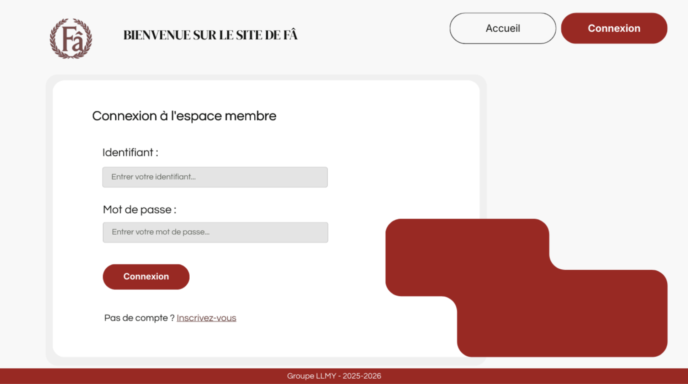
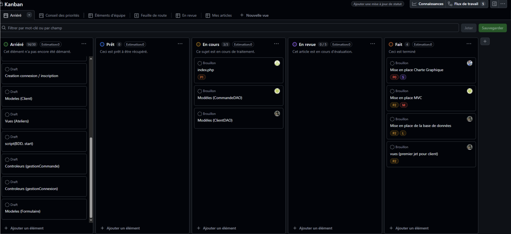
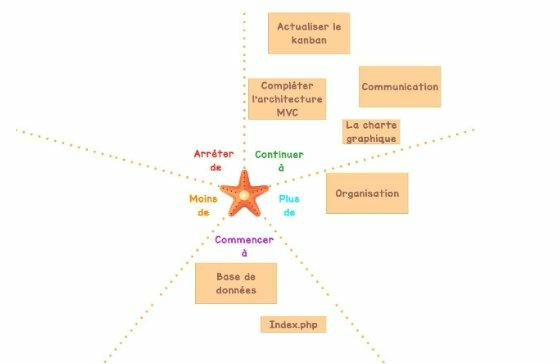
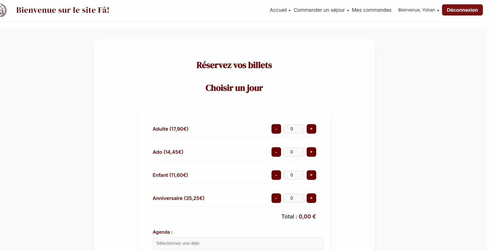
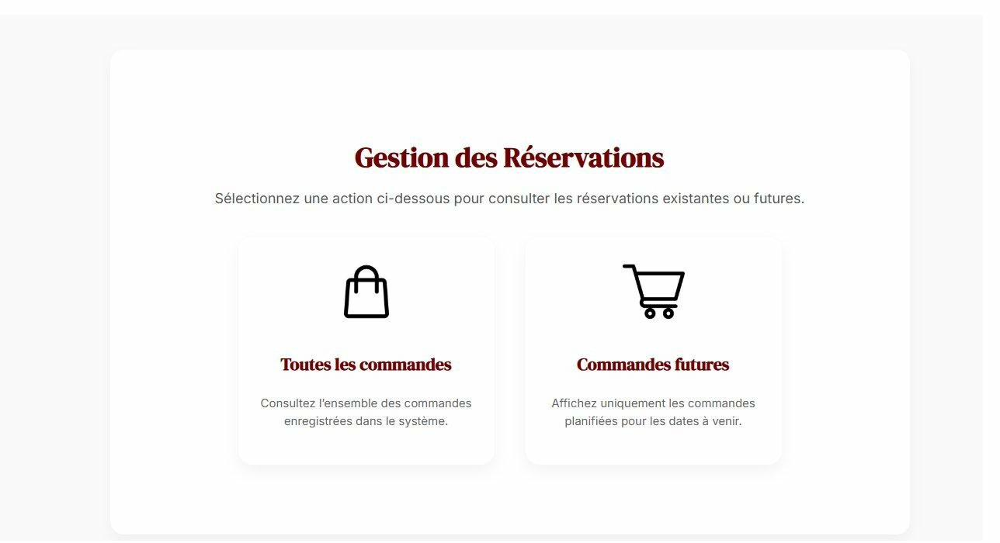

Projet Site FA
Gestion de billetterie & Architecture MVC
Création d'une application web pour gérer les entrées dans un parc archéologique gallo-romain majeur via une billetterie en ligne.
Développement en équipe avec la méthodologie Agile SCRUM et GitHub.

Interface de connexion pour l'administration et les clients.
🎯 Contexte du Projet
Le Site du Fâ, en Charente-Maritime, est un site archéologique gallo-romain majeur. Ouvert au public, il propose la découverte d'une ancienne ville portuaire antique.
Problématique : L'augmentation croissante de la fréquentation touristique entraînait une surcharge au niveau de la billetterie, mobilisant le personnel pour des tâches administratives. L'objectif était de concevoir une application web pour fluidifier la gestion des entrées en permettant de réserver des billets et créneaux d'ateliers en amont.
Fonctionnalités clés :
- Réservation de billets (adultes, ados, enfants, tarifs anniversaires)
- Gestion des accès avec différents rôles (Client, Employé, Admin)
- Réception d'un récapitulatif de commande
🤝 Organisation & Méthode Agile
Pour mener à bien ce développement collaboratif, nous avons adopté la méthode Agile SCRUM. Cette approche itérative nous a permis de rester flexibles face aux retours du client (modifications tarifaires, dates indisponibles, etc.).
L'intégralité du code a été gérée via Git et hébergée sur GitHub, avec création de branches pour l'isolation des fonctionnalités et gestion des conflits lors des fusions (Pull Requests).
Outils utilisés :
- Backlog & Sprint : Découpage en User Stories avec estimation de complexité
- Kanban : Suivi de l'avancement via GitHub Projects
- Rétrospectives : Utilisation de "l'Étoile de mer" en fin de sprint

Gestion des tâches avec GitHub Projects (Kanban).

Rétrospective en étoile de mer pour l'amélioration continue.
⚙️ Architecture & Modélisation
Afin de produire un code maintenable et évolutif, nous avons rigoureusement appliqué le modèle de conception MVC (Modèle - Vue - Contrôleur) ainsi que le pattern DAO (Data Access Object) pour gérer la persistance des données.
Modélisation (MCD)
Structure optimisée autour d'une entité mère abstraite (Personne) et d'entités filles (Client, Employé). Les accès sont gérés via des Comptes liés.
Architecture MVC
Les vues en HTML/PHP, les contrôleurs en scripts PHP pour coordonner la logique, et les modèles pour représenter les objets métiers.
Pattern DAO
Séparation complète de la logique métier et de l'accès aux données. Les requêtes SQL sont isolées dans les classes DAO spécifiques.

Interface client pour passer une commande de billets.

Back-office pour la gestion des réservations par le personnel.
Compétences validées :
- 1.3 — Développement de la présence en ligne de l'organisation
- 1.4 — Travail en mode projet (méthode Agile SCRUM)
- 1.6 — Organisation de son développement professionnel
- 2.1 — Conception et développement d'une solution applicative (MVC/DAO)
- 2.3 — Gestion des données (SQL, base de données relationnelle)